2下學期 第 2 章
氧化還原反應
答案卡
點題號可跳到該題詳解。開啟「遮住答案」後，點一下塗卡格才會顯示答案。
詳解
活性大的非金屬元素容易燃燒，氧化物水溶液呈酸性。硫粉燃燒產生藍色火焰，氧化物為具臭味之二氧化硫，二氧化硫溶於水產生亞硫酸，呈酸性，會使藍色石蕊試紙變紅色。故選(D)。
看題目
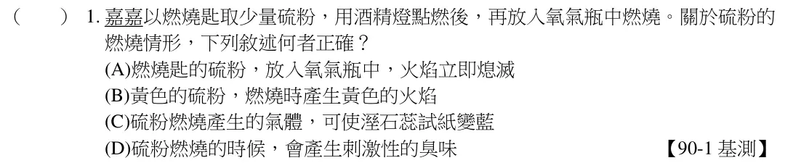
非金屬元素氧化物，如可溶於水，水溶液呈酸性，會使藍色石蕊試紙變紅色；金屬元素氧化物，如可溶於水，水溶液呈鹼性，會使紅色石蕊試紙變藍色。故選(B)。
看題目
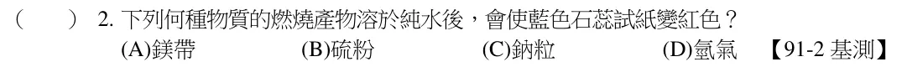
非金屬元素氧化物，如可溶於水，水溶液呈酸性；CO2 無色無味，SO2 有刺激性臭味；常溫常壓下兩者均為氣態；CO2 由元素碳燃燒生成，SO2 由元素硫燃燒生成。故選(B)。
看題目
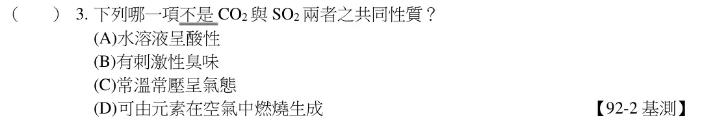
由反應式可知，鋅被氧化，是還原劑，銅被還原，為氧化劑；對氧的活性大小為鋅＞銅。故選(D)。
看題目
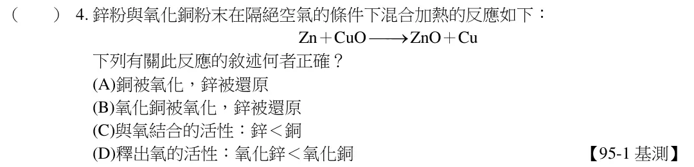
鎂燃燒的產物為氧化鎂，氧化鎂溶於水形成氫氧化鎂水溶液，呈鹼性，pH值大於7。硫燃燒的產物為二氧化硫，二氧化硫溶於水形成亞硫酸水溶液，呈酸性，pH 值小於7。故選(B)。
看題目
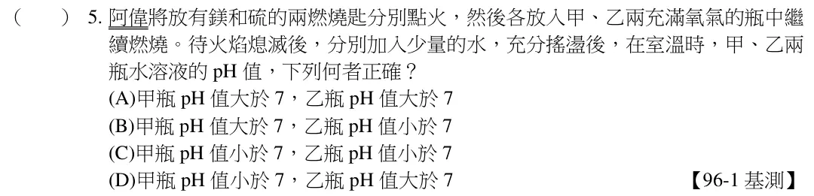
活性較大之元素可將活性較小之元素從化合物中還原出來。因為活性順序為：鐵＞銅＞銀，所以鐵可將銅離子還原成金屬銅。故選(B)。
看題目
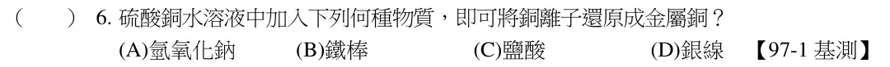
元素活性較大者可將活性較小的元素從氧化物中取代，鈉與二氧化碳的反應：4Na＋CO2→2Na2O＋C。故選(B)。
看題目
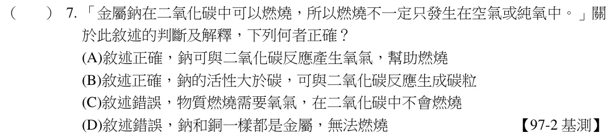
紅色石蕊試紙變藍色，代表溶液為鹼性，且金屬加水可劇烈燃燒，其應為鹼金屬族元素。故選(C)。
看題目
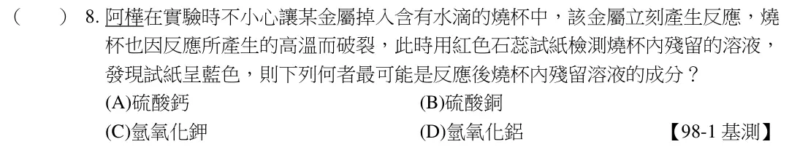
還原劑的定義：使對方還原，本身氧化（得到氧）；氧化劑的定義：使對方氧化，本身還原（失去氧）；煤焦本身氧化成一氧化碳，而使SnO2 還原，故為還原劑。故選(B)。
看題目
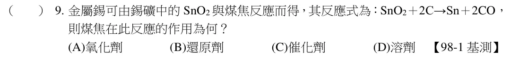
(A)銅活性比鐵小，故不易生鏽；(B)鐵、鈷、鎳為磁性物質，銅不是；
(C)Zn＋CuSO4→Cu＋ZnSO4，故鋅活性大於鐵，才能產生取代反應；
(D)Zn＋2HCl→ZnCl2＋H2，鋅的活性比銅大，故可與鹽酸反應。故選(B)。
看題目
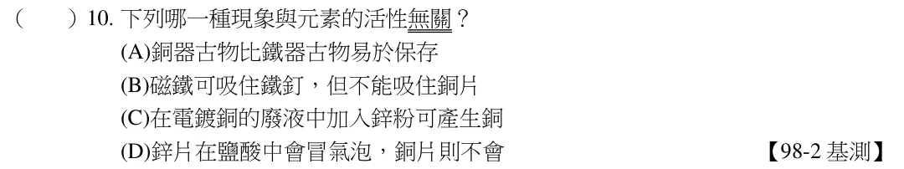
活性愈大，在空氣中燃燒愈劇烈。鹼金族活性大，在空氣中容易燃燒；而金屬氧化物溶於水可解離出OH－，呈鹼性。故選(A)。
看題目
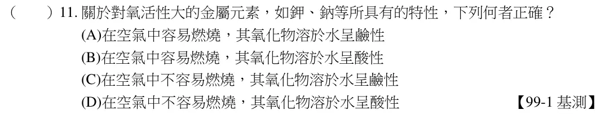
鋁的活性大於銅，故將進行取代反應而將銅析出，成為硫酸鋁（無色）。硫酸銅溶液原為藍色，當銅離子減少，藍色將變淡；而銅金屬（紅色）則將被析出。故選(C)。
看題目
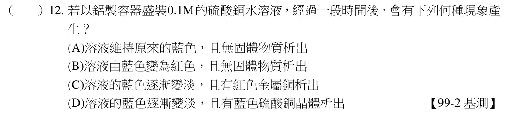
鋁和鋅的活性皆比鐵大，但鋅的氧化物會形成保護膜，使內部不會繼續被氧化而生鏽。故選(B)。
看題目
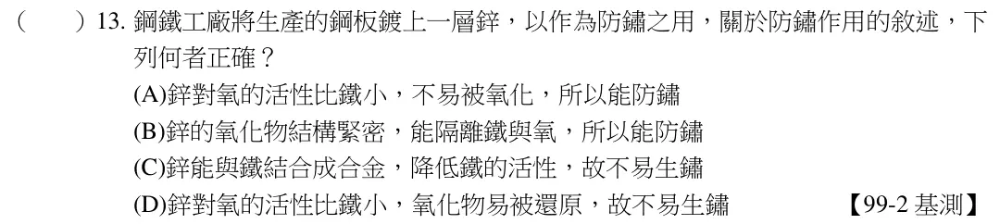
根據反應式Fe2O3＋2Al→Al2O3＋2Fe，其中因氧化鐵（Fe2O3）將鋁（Al）氧化成氧化鋁（Al2O3），而本身還原為鐵（Fe），故為氧化劑。故選(A)。
看題目
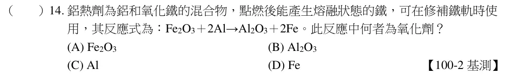
茶多酚很容易和氧作用而被氧化，可作為還原劑。故選(A)。
看題目
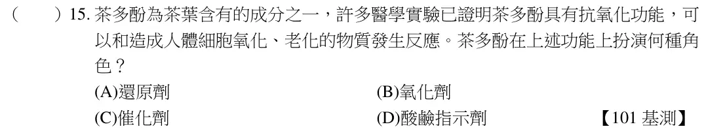
由實驗一可知，甲較容易與稀硫酸發生反應，活性比乙大；實驗二中，丙可與硝酸銀反應，取代銀形成新的化合物，乙則無法，因此活性為丙＞銀＞乙。又甲、丙無法比較活性大小。故選(D)。
看題目
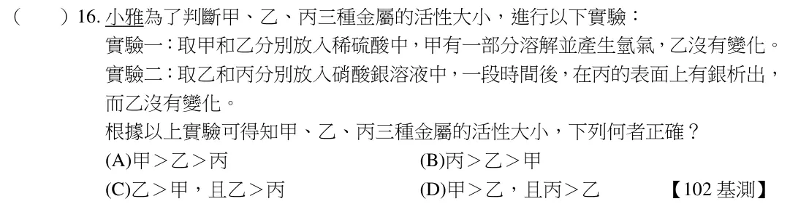
看題組文章
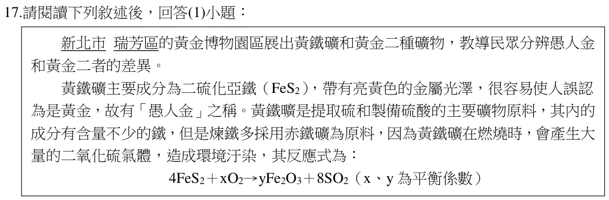
氧化還原反應中，為本身發生氧化的物質，具有還原另一物質的能力，稱為還原劑。由化學反應式中可以發現，FeS2 發生氧化反應，即為還原劑。故選(B)。
看題目
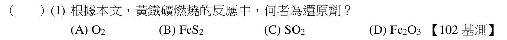
鐵粉和氧作用得到氧，是進行氧化反應，當還原劑，故選(C)。
看題目
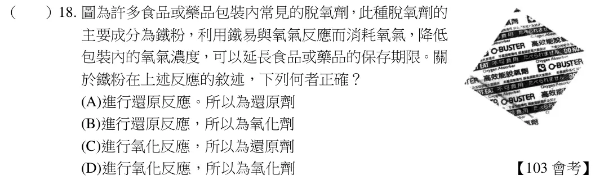
看題組文章
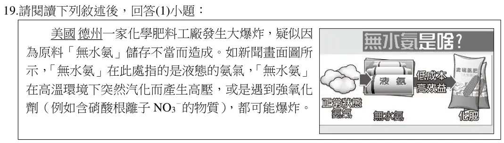
硝酸根為強氧化劑。無水氨和硝酸根反應時，無水氨進行氧化反應，硝酸根進行還原反應。故選(A)。
看題目
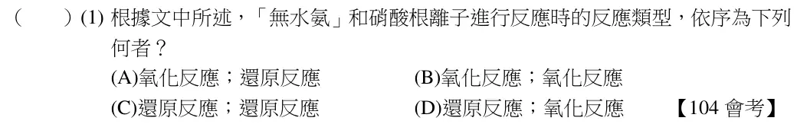
看題目
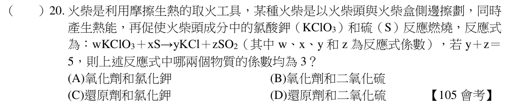
階段一：S + O2 → SO2，S 被氧化，為還原劑；
階段二：2 SO2 + O2 → 2 SO3，SO2 被氧化，為還原劑，故選(B)。
看題目
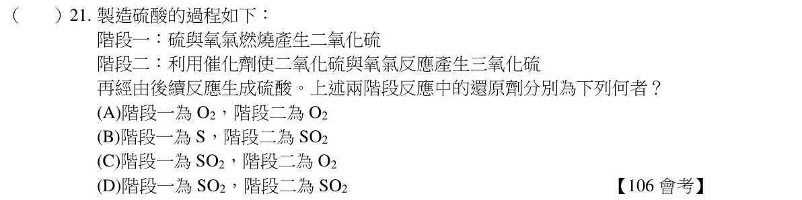
黃金對氧的活性小，與黃金類似對氧活性小的金屬，就不會與氧作用，在自然界中可以元素狀態存在。故選(C)。
看題目
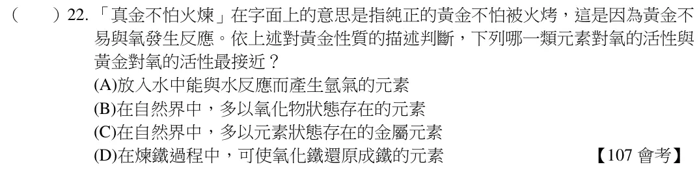
N2O4→N2，失去氧為還原反應，是氧化劑。故選(C)。
看題目
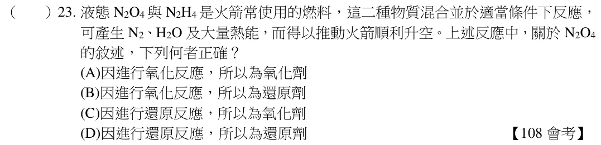
會與水發生劇烈反應的只有鈉。故選(A)。
看題目
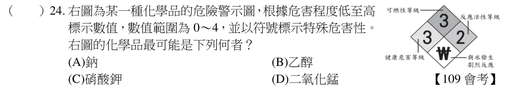
NO3-變成NO2-，代表失去氧的反應，為還原反應，本身當氧化劑。故選(C)。
看題目
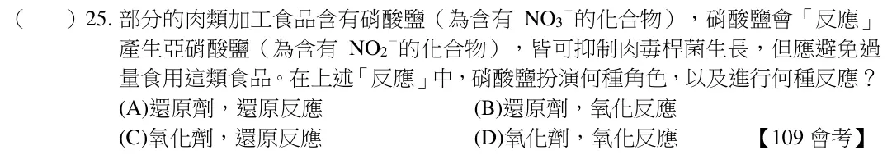
NO＋NO2＋2NH3→2N2＋3H2O，反應中NO 和NO2的比例為1：1，而廢氣中NO 為NO2的9 倍，所以須先將NO 氧化成NO2，使其莫耳數比為1：1，此時反應最快。故選(C)。
看題目
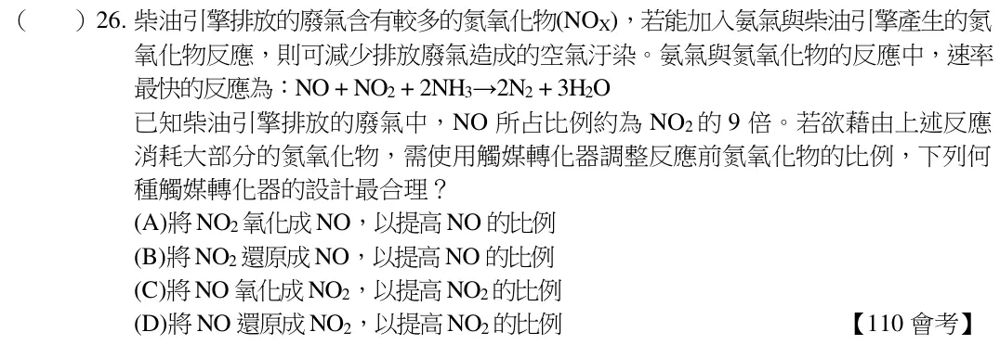
氮氣在常溫時，活性小可避免畫冊氧化。故選(D)。
看題目
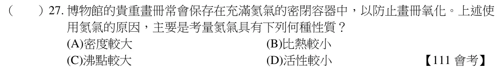
氫和氧反應，氫被氧化；金屬氧化物變成金屬，金屬氧化物被還原，故為氧化還原反應。故選(A)。
看題目
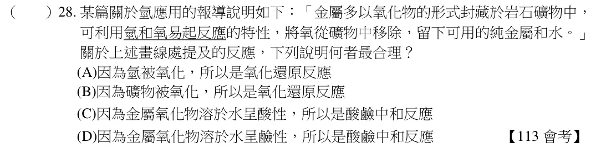
若碘液進行還原反應，則試管內的物質會進行氧化反應。(A)由實驗結果無法得知是維生素C；(C)由實驗得知，甲、丙試管中的物質可讓碘液進行還原反應呈無色，故甲、丙試管中的物質進行氧化反應；(D)實驗結果無法得知酸鹼變化情形。故選(B)。
看題目
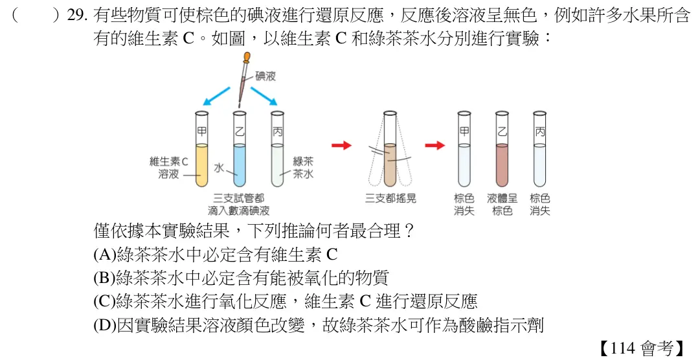